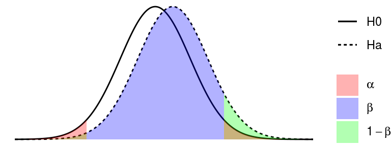

Методы выявления дифференциально-экспрессируемых пептидов
Марина Варфоломеева
Тестирование статистических гипотез с фриквентистской точки зрения
Допустим, мы хотим сравнить уровень экспрессии пептидов у морских гребешков, которых содержали при разной температуре. Исходя из существующих исследований и общих знаний мы предполагаем, что уровень экспрессии некоторых пептидов будет различаться (это то, что мы на самом деле думаем — исследовательская гипотеза). Чтобы проверить исследовательскую гипотезу, нужна нулевая гипотеза. Обычно нулевые гипотезы постулируют отсутствие каких либо различий. Так и в этом примере, нулевая гипотеза говорит, что уровень экспрессии не будет различаться.
Далее, мы проводим эксперимент, измеряем уровень экспрессии. После этого рассчитываем статистику, которая позволит оценить разницу уровней экспрессии в эксперименте (например, t-критерий). Наблюдаемое в эксперименте значение статистики сравнивают со значением, которое было бы получено, если бы уровни экспрессии не различались (т.е. если нулевая гипотеза верна). Если это значение маловероятно получить, когда уровни экспрессии не различаются, то мы “отвергаем” нулевую гипотезу. В таком случае, мы считаем, что результаты нашего эксперимента говорят в пользу нашей исследовательской гипотезы.
При тестировании статистических гипотез возможно четыре варианта развития событий: мы можем принять верное решение (отвергнуть неправильную или принять верную \(H_0\)), или мы можем ошибиться — тоже двумя разными способами. В таблице ниже показаны типы ошибок при проверке гипотез.
| \(H_0\) == TRUE | \(H_0\) == FALSE | |
|---|---|---|
| Отклоняем \(H_0\) | Ошибка I рода Ложно-положительный результат | Правильно Положительный результат |
| Сохраняем \(H_0\) | Правильно Отрицательный результат | Ошибка II рода Ложно-отрицательный результат |
## Warning: Ignoring unknown aesthetics: fill
## Warning: Ignoring unknown aesthetics: fill
Ошибки I рода возникают тогда, когда мы ошибочно отклоняем справедливую \(H_0\), т.е. находим различия там, где их нет на самом деле. Находить различия там, где их нет — значит множить сущности сверх необходимого. Поэтому вероятность ошибок I рода ученые договорились строго контролировать и следить, чтобы они появлялись не чаще, чем в 5% случаев. Иногда этот произвольно выбранный порог делают еще жестче — 1%. Вероятность ошибок I рода принято обозначать \(\alpha\). Это тот самый уровень значимости, с которым принято сравнивать доверительные вероятности (p-values), полученные в статистических тестах.
Ошибки II рода возникают, когда мы ошибочно принимаем ложную \(H_0\), т.е. не находим различий, там, где они на самом деле есть. Несмотря на то, что про ошибки II рода реже вспоминают, их не менее обидно делать. Считается допустимым, если такие ошибки возникают не чаще чем в 20% случаев. Это тоже совершенно произвольно взятый порог. Вероятность ошибок II рода принято обозначать \(\beta\).
Мощность теста — это способность выявлять различия, когда они есть на самом деле. Зная \(\beta\) можно вычислить вероятность того, что статистический тест обнаружит различия \(Power = 1 - \beta\)
## Warning: Ignoring unknown aesthetics: fill
## Warning: Ignoring unknown aesthetics: fill
Мощность любого статистического теста будет больше:
- если величина эффекта (d, величина выявляемых различий) будет больше
- если увеличить объем выборки
- если повысить уровень значимости (например, вместо \(\alpha = 0.01\), взять \(\alpha = 0.05\))
На примере t-критерия зависимость мощности от этих трех величин будет выглядеть так:

Способы выявления дифференциально экспрессируемых пептидов (The Good, The Bad, and The Ugly).
Есть множество способов измерить разницу экспрессии. Вот самые распространенные:
- fold change — соотношение уровеней экспрессии. Применяется, если нет повторностей. Грубый метод оценки, т.к. не позволяет оценить статистическую значимость.
- t-тест — при небольших выборках у него малая мощность из-за неточной оценки \(\sigma\).
- Модерированный t-тест (с использованием Empirical Bayes) — более мощный, чем обычный t-критерий. Позволяет точнее оценить \(\sigma\) для конкретного пептида, используя информацию о распределении \(\sigma\) для всех пептидов.
Fold change (The Ugly)

Fold change (FC) — исторически первый способ оценивать дифференциальную экспрессию. Его придумали в те времена, когда делать повторности было дорого. Договорились, что будем считать, что экспрессия меняется, если ее уровень сильно отличается между группами (в 1.5 или 2 раза).
Нужно оценить, во сколько раз экспрессия в одной группе больше, чем экспрессия в другой группе. FC — это пропорция, дробь, в числителе одна группа, в знаменателе другая.
Не надо усреднять соотношения!
Допустим, мы сравниваем уровень экспрессии до и после какого-то воздействия и у нас есть две повторности:
| Повторность 1 | Повторность 2 | Среднее | |
|---|---|---|---|
| До воздействия | \(A_{1} = 1\) | \(A_{2} = 10\) | \(\bar{A} = 5.5\) |
| После воздействия | \(B_{1} = 10\) | \(B_{2} = 1\) | \(\bar{B} = 5.5\) |
| \(A_{1}/B_{1} = 1/10\) | \(A_{2}/B_{2} = 10/1\) | ||
| Соотношение экспрессии | \[\frac {A_{1}/B_{1}} {A_{2}/B_{2}} = \frac {1/10 + 10/1} {2} = 5.05\] (Неправильно!) | \[\bar{A} / \bar{B} = 5.5/5.5 = 0\] (Правильно!) |
В первой из повторностей уровень экспрессии cнизился в 10 раз (\(1/10\)), а во второй — в 10 раз вырос (\(10/1\)).
Если мы опрометчиво усредним эти соотношения \((1/10 + 10/1) / 2 = 5.05\), то получится, что уровень экспрессии в среднем вырос в 5 раз — ерунда.
Правильней было бы посчитать средний уровень экспрессии до (\((1 + 10)/2 = 5.5\)) и после (\((10 + 1)/2 = 5.5\)) и только потом посчитать их соотношение. Тогда мы получили бы гораздо более логичный результат: на самом деле соотношение уровней эеспрессии не изменилось (\(5.5/5.5 = 1\)).
Соотношения сырых данных экспрессии брать неудобно, потому что обычные соотношения распределены несимметрично вокруг 1. Сравните, например соотношения: \(1/5 = 0.2\), \(5/5 = 1\) и \(5/1 = 5\).
Гораздо удобнее брать логарифм соотношения, потому что его величина распределена симметрично вокруг нуля (и тогда \(log(X) = -1 * log(1/X)\)). Действительно, в нашем примере будет так: \(log(1/5) = -1.6\), \(log(5/5) = 0\) и \(log(5/1) = 1.6\).
В симметричености распределения логарифмов соотношений мы можем убедится при помощи простой симуляции.
sim_ratios <- function(n_max){
#' Функция, которая возвращает соотношение двух
#' случайных целых положительных чисел,
#' лежащих в пределах от 0 до nmax
a <- sample.int(n = n_max, size = 1)
b <- sample.int(n = n_max, size = 1)
return(a/b)
}
# Симулируем 100 000 соотношений
set.seed(932847)
simulated_ratios <- replicate(n = 100000, sim_ratios(n_max = 20000))
# Объединяем в датафрейм сырые соотношения и их логарифмы
dat_ratios <- data.frame(
ratio = simulated_ratios,
log_ratio = log2(simulated_ratios))
# рисуем боксплот
boxplot(dat_ratios, outline = F)
abline(h = 0, lty = 2, col = "red") # 0
Операции с логарифмами:
- \(log(1) = 0\)
- \(log(ab) = log(a) + log(b)\)
- \(log(a/b) = log(a) - log(b)\) - это и есть fold change
Обычно, данные логарифмируют при помощи логарифма по основанию 2 — log2(), чтобы облегчить сравнение fold change. Тогда, если экспрессия в 2 раза отличается между образцами, получится, что \(log2(2x/x) = log2(2) = 1\).
Основная проблема использования fold change — этот критерий выбирает гены, у которых самая большая разница экспрессии, но не позволяет проверить статистическую значимость различий. На самом деле, при наличии повторностей можно не использовать fold change, поскольку мы можем оценить статистическую значимость различий уровня экспрессии.
t-тест (The Bad)

Чтобы проверить гипотезу \(H_{0}: \bar{A} - \bar{B} = 0\), нужно оценить дисперсию в генеральной совокупности \(\sigma\). После этого можно воспользоваться t-критерий.
t-критерий
\[t = \frac {\bar {A} - \bar {B}} {\sqrt{s^{2}}}\]
Обычный t-тест исходит из предположения, что дисперсии в группах одинаковы. Обычно, это предположение нереалистично. Мы будем использовать модификацию t-теста для разных дисперсий в группах — т.наз. t-критерий Велша (Welch’s t-test).
| Группа А | Группа B | |
|---|---|---|
| Наблюдения | \[a_1, a_2, ..., a_n\] | \[b_1, b_2, ..., b_m\] |
| Средние значения | \[\bar{A} = \frac {\sum{a_i}} {n}\] | \[\bar{B} = \frac {\sum{b_i}} {m}\] |
| Дисперсии | \[s^2_a = \frac {\sum{a_i - \bar{A}}} {n - 1}\] | \[s^b_b = \frac {\sum{b_i - \bar{B}}} {m - 1}\] |
t-критерий для случая неравных дисперсий (Welch’s t-test)
\[t = \frac {\bar {A} - \bar {B}} {\sqrt{\frac{s^{2}_{a}}{n} + \frac{s^{2}_{b}}{m}}}\]
- если большой объем выборки, то распределение t-статистики приближается к нормальному
- если данные распределены нормально, то при любом объеме выборки t-статистика подчиняется t-распределению
Далее при t-тесте следуют действия, обычные при тестировании гипотез:
- Считаем t-статистику.
- Считаем вероятность получить такое значение статистики при условии, что нулевая гипотеза верна (p-value).
- Сравниваем вероятность (p-value) с заданным уровнем значимости (\(\alpha\)). Если эта вероятность меньше заданного уровня значимости - отвергаем нулевую гипотезу.
t-тест в R
Открываем данные об экспрессии гребешков
library(limma)
expr <- read.table("data/Prot_Br_H_T.csv", header = TRUE, sep = ";", row.names = 1)
fact <- read.table("data/Prot_Br_H_T_factor.csv", header = TRUE, sep = ";", row.names = 1)Для сегодняшнего занятия давайте возьмем только гребешков из 10 градусов
f_subset <- fact$Oxygen == "Normox" & fact$Temperature != "25C"
expr_subset <- expr[, f_subset]
fact_subset <- droplevels(fact[f_subset, ])# нормализуем и логарифмируем, как на прошлых занятиях
expr_log <- log2(normalizeQuantiles(expr_subset))Давайте сравним уровень экспрессии первого пептида между группами при помощи простого t-критерия.
groups <- fact_subset$Temperature == "10C"
t.test(x = expr_log[1, groups], y = expr_log[1, !groups])##
## Welch Two Sample t-test
##
## data: expr_log[1, groups] and expr_log[1, !groups]
## t = -2.6261, df = 5.3871, p-value = 0.04349
## alternative hypothesis: true difference in means is not equal to 0
## 95 percent confidence interval:
## -1.2957476 -0.0277352
## sample estimates:
## mean of x mean of y
## 22.40771 23.06945Но у нас всего 647 пептидов. Было бы не удобно делать все эти сравнения вручную. Поэтому, давайте научимся добывать из объекта, возвращаемого t.test() значение p-value.
t_result <- t.test(x = expr_log[1, groups], y = expr_log[1, !groups])
str(t_result)## List of 9
## $ statistic : Named num -2.63
## ..- attr(*, "names")= chr "t"
## $ parameter : Named num 5.39
## ..- attr(*, "names")= chr "df"
## $ p.value : num 0.0435
## $ conf.int : atomic [1:2] -1.2957 -0.0277
## ..- attr(*, "conf.level")= num 0.95
## $ estimate : Named num [1:2] 22.4 23.1
## ..- attr(*, "names")= chr [1:2] "mean of x" "mean of y"
## $ null.value : Named num 0
## ..- attr(*, "names")= chr "difference in means"
## $ alternative: chr "two.sided"
## $ method : chr "Welch Two Sample t-test"
## $ data.name : chr "expr_log[1, groups] and expr_log[1, !groups]"
## - attr(*, "class")= chr "htest"t_result$p.value## [1] 0.04349157Теперь мы готовы посчитать t-тест для каждого пептида. Для этого нам понадобится:
- написать функцию, которая считает t-test и добывает p-value
- к каждой строке данных применить наш t.test
# 1) пишем функцию, которая считает t-test и добывает p-value
t_p_val <- function(x, f1, f2) {
tryCatch(t.test(x = x[f1], y = x[f2])$p.value,
error = function(e) NA)
}
# тестируем функцию
t_p_val(expr_log[1, ], f1 = groups, f2 = !groups)## [1] 0.04349157# 2) к каждой строке данных применяем наш t.test
pvals <- apply(X = expr_log,
MARGIN = 1,
FUN = t_p_val,
f1 = groups,
f2 = !groups)
# В результате мы получаем список p-values
head(pvals)## 45 53 27 54 66 75
## 0.04349157 0.00470728 0.21201371 0.47900953 0.48985426 0.07360361class(pvals)## [1] "numeric"# Его можно легко превратить в вектор
pvals <- unlist(pvals)Все готово, мы посчитали p-values для всех пептидов.
head(pvals)## 45 53 27 54 66 75
## 0.04349157 0.00470728 0.21201371 0.47900953 0.48985426 0.07360361Сколько пептидов, достоверно меняющих экспрессию, мы нашли?
sum(pvals <= 0.05)## [1] NAЭкспрессия каких пептидов различается?
ids_dif <- which(pvals <= 0.05)
rownames(expr_log)[ids_dif]## [1] "45" "53" "102" "134" "262" "261" "278" "256" "268" "272"
## [11] "266" "292" "274" "335" "294" "339" "351" "440" "525" "503"
## [21] "533" "528" "530" "529" "574" "575" "551" "557" "560" "582"
## [31] "573" "580" "587" "588" "592" "604" "624" "613" "623" "651"
## [41] "627" "631" "650" "647" "646" "657" "659" "661" "658" "665"
## [51] "667" "670" "714" "699" "767" "756" "801" "798" "817" "814"
## [61] "800" "832" "831" "845" "869" "878" "861" "876" "879" "897"
## [71] "916" "913" "895" "890" "914" "933" "932" "939" "954" "948"
## [81] "946" "958" "957" "998" "990" "1022" "1024" "1063" "1055" "1059"
## [91] "1075" "1081" "1089" "1102" "1109" "1111" "1117" "1143" "1151" "1141"
## [101] "1142" "1170" "1175" "1213" "1232" "1253" "1228" "1260" "1290" "1308"
## [111] "1309" "1298" "1361" "1356" "1343" "1419" "1438" "1452" "1496" "1502"
## [121] "1475" "1483" "1519" "1581" "1624" "1600" "1612" "1633" "1643" "1708"
## [131] "1827" "1806" "1854" "1893" "1941" "2036" "2089" "2126" "2112" "2385"
## [141] "2428" "2565" "2537" "2806" "2813"Проблема в том, что это пока еще не правильные p-values!
Проблемы с t-тестом
1.Множественные сравнения
В результате протеомного исследования обычно получают данные об экспрессии сотен–тысяч пептидов. При анализе дифференциальной экспрессии для каждого пептида нам нужно протестировать нулевую гипотезу \(H_0: \bar{A} = \bar{B}\).
В случае, если у нас всего один пептид — мы делаем всего один статистический тест. В этом единственном тесте мы заранее фиксируем вероятность совершить ошибку I рода на уровне значимости \(\alpha = 0.05\) (или \(\alpha = 0.01\)).
Но представьте себе, что мы сравниваем уровень экспрессии 1000 пептидов. Даже если на самом деле их экспрессия не различается в двух группах (\(H_0\) на самом деле справедлива), мы получим по крайней мере в 50 из этих тестов \(p < 0.05\). Т.е. в 50 из 1000 тестов мы совершим ошибку I рода — найдем различия экспрессии там, где их нет. Это непозволительно большое количество ошибок.
Если вероятность ошибки I рода \(\alpha = 0.05\), тогда
Вероятность не совершить ошибку первого рода \(1 - \alpha\).
Вероятность не совершить ошибку первого рода ни в одном из сравнений \((1 - \alpha)^{m}\)
Вероятность совершить хотябы одну ошибку первого рода в группе сравнений \(1 - (1 - \alpha)^{m}\)
| Если не делать поправок на число сравнений… | 1 сравнение | семейство из 1000 сравнений |
|---|---|---|
| Число ошибок I рода на число сравнений Per comparison error rate |
0.05 | 0.05 |
| Ожидаемое число ошибок Per family error rate |
0.05 | 0.05 * 1000 = 50 |
| Вероятность получить хотябы одну ошибку I рода Family-wise error rate (FWER) |
0.05 | \[1 - (1 - 0.05)^{1000} = 1\] |
Контроль вероятности получить хотя бы одну ошибку I рода в группе сравнений.
Вероятность получить хотябы одну ошибку I рода в группе сравнений (Family-wise error rate, FWER) можно зафиксировать на каком-нибудь приемлемом уровне. Примеры таких процедур — поправка Бонферрони и метод Хольма-Бонферрони.
Поправка Бонферрони — процедура в один шаг. Отклоняем все нулевые гипотезы, для которых \(p \le \frac {\alpha} {m}\). Например, если вам нужно сделать 1000 сравнений, чтобы вероятность совершить ошибку I рода была 0.05, то нужно использовать \(p = 0.05/1000 = 0.00005\) для каждого сравнения.
Метод Хольма-Бонферрони — пошаговая процедура.
Чтобы зафиксировать \(FWER \le \alpha\):
- Сортируем {p_n} p-values, полученные в тестах, в порядке возрастания
\(p_{1} \le p_{2} \le \cdots \le p_{n - 1} \le p_{n}\)
- Вводим поправку для уровня значимости
\(\hat{p_{j}} = min{\{(n - j + 1) \cdot p_{j}, 1\}}\)
В таблице приведены результаты нескольких сравнений. Для каждой из доверительных вероятностей (p-values) мы получили свой порог значимости при помощи поправки Хольма-Бонферрони:
| Ранг (\(j\)) | \(\mathbf{p_{j}}\) | \((n - j + 1)\) | \(\mathbf{\hat{p_{j}}}\) | Отвергаем \(H_0\)? |
|---|---|---|---|---|
| 5 | 0.015 | 1 | 0.015 | Да |
| 4 | 0.010 | 2 | 0.020 | Да |
| 3 | 0.035 | 3 | 0.105 | Нет |
| 2 | 0.040 | 4 | 0.160 | Нет |
| 1 | 0.046 | 5 | 0.230 | Нет |
Недостаток применения контроля FWER — снижение мощности всех тестов: мы каким либо способом снижаем \(\alpha\) для каждого сравнения, в результате возрастает \(\beta\), а значит снижается мощность \(1 - \beta\).
Процедуры контроля FWER неоправданно жесткие. Они контролируют вероятность возникновения хотябы одной ошибки первого рода в группе сравнений. Считается, что небольшое число ошибок I рода все же можно допустить (например, при анализе геномных или протеомных данных). Именно поэтому часто указывают не уровни значимости после коррекции на множественные сравнения (p-values), а частоту ложноположительных результатов (частоту возникновения ошибок I рода).
Контроль частоты ложноположительных результатов.
Частота ложноположительных результатов (false discovery rate, FDR) — это доля ошибок I рода относительно общего числа отвегнутых \(H_0\). Для
Для контроля FDR используется процедура Беньямини-Хохберга.
Алгоритм процедуры Беньямини-Хохберга
Чтобы зафиксировать \(FDR \le \gamma\):
- Сортируем {p_n} p-values, полученные в тестах, в порядке возрастания
\(p_{1} \le p_{2} \le \cdots \le p_{n - 1} \le p_{n}\)
- Находим такое значение p-value с наибольшим рангом \(j\), чтобы
\(p_{j} \le \frac{j}{n}\times \gamma\)
- Все тесты с рангами меньше \(j\) считаем значимыми
Для каждого теста можно вычислить точную ожидаемую долю ложноположительных результатов. \(\mathbf{q-value}\) — минимальное значение FDR при котором результат конкретного теста можно считать значимым (Storey 2002, Storey Tibshirani 2003).
Например, для 15 сравнений результаты процедуры Беньямини-Хохберга могут выглядеть так:
| Ранг (\(j\)) | \(\mathbf{p_{j}}\) | \(\mathbf{\frac{j}{n}\times \gamma}\) | Отвергаем \(H_0\)? | q-value |
|---|---|---|---|---|
| 1 | 0.0010 | 0.01 | Да | 0.0150 |
| 2 | 0.0070 | 0.02 | Да | 0.0525 |
| 3 | 0.0170 | 0.03 | Да | 0.0850 |
| 4 | 0.0230 | 0.04 | Да | 0.0862 |
| 5 | 0.0300 | 0.05 | Да | 0.0900 |
| 9 | 0.4861 | 0.09 | Нет | 0.8102 |
| 10 | 0.6741 | 0.10 | Нет | 0.9588 |
| 8 | 0.4113 | 0.08 | Нет | 0.7712 |
| 6 | 0.3252 | 0.06 | Нет | 0.7033 |
| 11 | 0.8492 | 0.11 | Нет | 0.9588 |
| 12 | 0.8523 | 0.12 | Нет | 0.9588 |
| 13 | 0.8895 | 0.13 | Нет | 0.9588 |
| 15 | 0.9588 | 0.15 | Нет | 0.9588 |
| 14 | 0.9578 | 0.14 | Нет | 0.9588 |
| 7 | 0.3282 | 0.07 | Нет | 0.7033 |
Контроль FWER и FDR в R
Поправки к p-values в R можно сделать при помощи функции p.adjust()
p_bonf <- p.adjust(pvals, method = "bonferroni")
head(p_bonf)## 45 53 27 54 66 75
## 1 1 1 1 1 1У скольких пептидов экспрессия достоверно различается после поправки Бонферрони?
sum(p_bonf <= 0.05, na.rm = TRUE)## [1] 1Названия пептидов, экспрессия которых достоверно различается после поправки Бонферрони?
names(pvals)[p_bonf <= 0.05]## [1] NA NA "914"Аргумент method функции p.adjust() задает тип поправки.
Давайте посчитаем, сколько достоверно различающихся пептидов будет найдено после поправки Хольма
p_holm <- p.adjust(pvals, method = "holm")
sum(p_holm <= 0.05, na.rm = TRUE)## [1] 1и сколько — после применения процедуры Беньямини-Хохберга
p_bh <- p.adjust(pvals, method = "BH")
sum(p_bh <= 0.05, na.rm = TRUE)## [1] 12.Распределение t-статистики
t-статистика, вычисленная на реальных данных может быть не t-распределена, из-за этого можно прийти к неправильным выводам.
Возможные решения:
- использование непараметрических тестов, которые не делают никаких предположений о форме распределения. Недостаток — малая мощность.
- использование бутстреп-оценок. Недостаток — нужен большой объем выборок.
3.Неточная оценка дисперсии экспрессии
При рассчете обычного t-критерия для оценки дисперсии экспрессии пептидов используется выборочная оценка дисперсии. Если повторностей мало - оценки дисперсии получаются нестабильными и не точными. t-критерий лучше работает при большом числе повторностей, т.к. удается точнее оценить \(\sigma\)
Есть другие способы оценить дисперсию — можно использовать информацию о других пептидах, чтобы оценить распределение возможных значений дисперсии (модерируемый t-критерий, см. ниже).
4.Разная дисперсия экспрессии
У разных пептидов может быть разная дисперсия экспрессии.
Часто оказывается, что большая разница уровней экспрессии наблюдается у пептидов с низким уровнем экспрессии.
Из-за этой особенности данных простое применение t-критерия может привести к некорректным выводам:
- Даже ничтожные различия уровня экспрессии могут оказаться достоверными для пептидов с небольшой дисперсией экспрессии (т.к. небольшие стандартные ошибки).
- Даже очень сильные различия уровня экспрессии могут оказаться недостоверными для пептидов с большой дисперсией экспрессии (т.к. стандартные ошибки велики).
Moderated t-test (The Good)
Реализован в пакете limma (Ritchie et al. 2015)
“Поправленные” стандартные отклонения (shrunk standard deviations)
\[\tilde{s}^{2}_{i} = \frac {s^{2}_{i} d_{i} + s^{2}_{0} d_{0}} {d_{i} + d_{0}}\]
Модерированный t-критерий
\[\tilde{t}_{g} = \frac {\bar{M}_{g}} {\tilde{s}_{g}\sqrt{c_{g}}}\]
После его применения не будет случаев, когда t-статистика велика просто потому, что стандартная ошибка оказалась маленькой.
Линейные модели (дисперсионный и регрессионный анализ) можно использовать для тестирования сложных гипотез. Модерированный t-критерий, как и обычный, можно использовать для оценки значимости коэффициентов линейных моделей. Мы найдем дифференциально-экспрессируемые пептиды при помощи линейной модели.
Уравнение линейной регрессии, которое мы будем использовать
\[\hat y _{i} = b _0 + b _1 x _{1i} + \epsilon _{i}\]
В нем \(\hat y _{i}\) — зависимая переменная, уровень экспрессии, \(b _0\) и \(b _1\) - коэффициенты, \(x _{1i}\) — независимая переменная (предиктор, фактор), описывающая принадлежность гребешка к группе, \(\epsilon _{i}\) — остатки от линейной регрессии, \(i = 1, 2, \cdots, n\) — значения.
Поскольку мы сравниваем всего два состояния фактора, их можно закодировать при помощи одного единственного предиктора \(x _{1i}\). Этот предиктор будет принимать значение 0 на базовом уровне фактора, и значение 1 на другом уровне. В таком случае, коэффициент \(b_0\) будет означать уровень экспрессии на базовом уровне фактора, а коэффициент \(b_1\) — разницу уровней экспрессии между двумя уровнями фактора.
Уравнение линейной регрессии можно переписать в виде матриц:
\[\left[\begin{array}{c} \hat y_1 \\ \hat y_2 \\ \vdots \\ \hat y_n \end{array}\right] = \left[\begin{array}{cc} 1 & x_{1,1} \\ 1 & x_{2,1} \\ \vdots & \vdots \\ 1 & x_{n,1} \end{array}\right] \cdot \left[\begin{array}{c} b _0 \\ b _1 \end{array}\right] + \left[\begin{array}{c} \epsilon _1 \\ \epsilon _2 \\ \vdots \\ \epsilon _n \end{array}\right] \]
Сокращенная форма записи линейной регрессии в матричном виде выглядит так: \(\mathbf{\hat y} = \mathbf{X} \mathbf{b} + \mathbf{\epsilon}\).
Чтобы подобрать в R линейную модель экспрессии при помощи пакета limma, нужно будет создать модельную матрицу \(\mathbf{X}\). Затем при помощи функции lmFit() мы подберем коэффициенты линейной регрессии. Поскольку в этом примере мы сравниваем всего два уровня фактора, чтобы проверить, различается ли экспрессия какого-либо пептида между ними, нужно будет всего лишь проверить значимость второго коэффициента линейной модели \(b _1\). Это мы сделаем как раз при помощи модерированного t-критерия. Кроме того, нам придется сделать поправку на множественные сравнения, поскольку мы по-прежнему тестируем много пептидов сразу. Наконец, мы выберем дифференциально-экспрессируемые пептиды и построим тепловую карту их экспрессии.
Внимание! В limma сложно учесть технические реплики. Их проще усреднить перед анализом.
Moderated t-test в R
Загружаем данные, создаем ExpressionSet
library(Biobase)
expr_data <- as.matrix(expr_log)
pheno_data <- fact_subset
pheno_metadata <- data.frame(
labelDescription = c("Oxygen concentration", "Temperature"),
row.names=c("Oxygen", "Temperature"))
pheno_data <- new("AnnotatedDataFrame",
data = pheno_data,
varMetadata = pheno_metadata)
feature_data <- data.frame(Spot = rownames(expr_log))
rownames(feature_data) <- rownames(expr_data)
feature_metadata <- data.frame(
labelDescription = c("Spot number"),
row.names = c("Spot"))
f_data <- new("AnnotatedDataFrame",
data = feature_data,
varMetadata = feature_metadata)
experiment_data <-
new("MIAME",
name="Sebastien Artigaud et al.",
lab="lab",
contact="email@domain.com",
title="Proteomic responses to hypoxia at different temperatures in the great scallop (Pecten maximus).",
abstract="Abstract",
other=list(notes="partial dataset from Artigaud et al. 2014"))
exp_set <-
ExpressionSet(assayData = expr_data,
phenoData = pheno_data,
featureData = f_data,
experimentData = experiment_data)Уровни фактора
groups <- pData(exp_set)$Temperature
table(groups)## groups
## 10C 18C
## 5 5Создаем модельную матрицу
X <- model.matrix(~ groups)
X## (Intercept) groups18C
## 1 1 0
## 2 1 0
## 3 1 0
## 4 1 0
## 5 1 0
## 6 1 1
## 7 1 1
## 8 1 1
## 9 1 1
## 10 1 1
## attr(,"assign")
## [1] 0 1
## attr(,"contrasts")
## attr(,"contrasts")$groups
## [1] "contr.treatment"Подбираем линейную модель для i-того пептида
\(y_{i} = X \cdot \beta_{i}\)
fit <- lmFit(exp_set, design = X, method = "robust", maxit = 1000)
names(fit)## [1] "coefficients" "stdev.unscaled" "sigma"
## [4] "df.residual" "cov.coefficients" "pivot"
## [7] "rank" "genes" "Amean"
## [10] "method" "design"Empirical Bayes statistics
efit <- eBayes(fit)
names(efit)## [1] "coefficients" "stdev.unscaled" "sigma"
## [4] "df.residual" "cov.coefficients" "pivot"
## [7] "rank" "genes" "Amean"
## [10] "method" "design" "df.prior"
## [13] "s2.prior" "var.prior" "proportion"
## [16] "s2.post" "t" "df.total"
## [19] "p.value" "lods" "F"
## [22] "F.p.value"Таблица дифференциально-экспрессируемых пептидов
topTable(efit, coef = 2)## Spot logFC AveExpr t P.Value adj.P.Val B
## 1117 1117 -2.097332 19.60931 -12.233946 1.783848e-07 0.0001154150 7.796468
## 503 503 1.671683 19.26549 10.348757 8.905205e-07 0.0002880834 6.306577
## 1600 1600 -1.552564 19.93536 -9.131667 2.882910e-06 0.0006217477 5.160197
## 339 339 -1.618457 22.95344 -7.924962 1.052596e-05 0.0017025735 3.858720
## 1143 1143 -1.417364 21.62740 -7.470884 1.781123e-05 0.0023047734 3.342798
## 1232 1232 -1.126479 21.28169 -7.296731 2.192627e-05 0.0023643823 3.176141
## 272 272 -1.329412 20.74838 -7.148177 2.625276e-05 0.0024265048 2.940630
## 2112 2112 -1.632038 20.24126 -6.632898 5.005119e-05 0.0035981246 2.295313
## 665 665 2.094273 19.88046 6.643953 4.934600e-05 0.0035981246 2.261852
## 2806 2806 -2.703463 22.75115 -6.514730 5.830548e-05 0.0037723645 2.116281numGenes <- nrow(exprs(exp_set))
full_list <- topTable(efit, number = numGenes)## Removing intercept from test coefficients# View(full_list)RI-plot
Давайте создадим функцию, которая будет рисовать RI-plot, используя объект, возвращенный eBayes()
RIP_limma <- function(efit, coef, n = 10, signif = TRUE, fdr = 0.05, lfc = 0, text = TRUE, cex.text = 0.8, col.text = "grey20", main = "RI-plot", xlab = "Intensity", ylab = "Ratio", pch = 19, pch.signif = 21, col = "darkgreen", alpha = 0.3, cex = 0.3, ...){
# соотношение и интенсивность
R <- efit$coefficients[, coef]
I <- efit$Amean
# прозрачный цвет
col_btransp <- adjustcolor(col, alpha.f = alpha)
# график
plot(I, R, cex = cex, main = main, pch = pch, xlab = xlab, ylab = ylab, col = col_btransp, ...)
abline(h = 0)
# отмечаем дифференциально-экспрессируемые пептиды
if(signif){
sign <- p.adjust(efit$p.value[, coef], method = "BH") <= fdr
large <- abs(efit$coefficients[, coef]) >= lfc
points(I[sign & large], R[sign & large], cex = cex*2, col = "orange2", pch = pch.signif)
}
# подписываем первые n пептидов с сильнее всего различающейся экспрессией
if(text){
ord <- order(efit$lods[, coef], decreasing = TRUE)
top_n <- ord[1:n]
text(I[top_n], R[top_n], labels = efit$genes[top_n, ], pos = 4, cex = cex.text, col = col.text)
}
}RIP_limma(efit, coef = 2, n = 20, text = F)
RIP_limma(efit, coef = 2, n = 20, text = F, lfc = 1)
RIP_limma(efit, coef = 2, n = 5)
Сохраняем список всех пептидов в файл
dir.create("results")## Warning in dir.create("results"): 'results' already existswrite.table(full_list, file = "results/pecten_diff_expression.csv", sep = "\t", quote = FALSE, col.names = NA)Добываем дифференциально-экспрессируемые пептиды для дальнейшей работы
f_dif <- full_list$adj.P.Val <= 0.05 & full_list$logFC >= 1
# Находим имена пятен
names_dif <- full_list$Spot[f_dif]
# Находим индексы пятен в ExpressionSet
ids_dif_limma <- match(names_dif, fData(exp_set)$Spot)
# Фильтруем ExpressionSet
dif_exp_set <- exp_set[ids_dif_limma, ]
# Короткие имена гребешков
part1 <- substr(x = pData(dif_exp_set)$Oxygen, start = 0, stop = 1)
part2 <- substr(x = pData(dif_exp_set)$Temperature, start = 0, stop = 2)
short_names <- make.unique(paste(part1, part2, sep = "_"))
dat <- as.matrix(exprs(dif_exp_set))
colnames(dat) <- short_namesТепловая карта экспрессии дифференциальных пептидов
library(gplots)
pal_green <- colorpanel(75, low = "black", mid = "darkgreen", high = "yellow")
heatmap.2(dat, col = pal_green, scale = "none", key=TRUE, symkey = FALSE, density.info = "none", trace = "none", cexRow = 0.9, cexCol = 1, margins = c(4, 3), keysize = 0.8, key.par = list(mar = c(3, 0.1, 3, 0.1)))
pal_blue_red <- colorpanel(75, low = "steelblue", mid = "black", high = "red")
heatmap.2(dat, col = pal_blue_red, scale = "row", key = TRUE, symkey = FALSE, density.info = "none", trace = "none", cexRow = 0.9, cexCol = 1, margins = c(4, 3), keysize = 0.8, key.par = list(mar = c(3, 0.1, 3, 0.1)))
Ссылки
Ritchie, M. E., B. Phipson, D. Wu, Y. Hu, C. W. Law, W. Shi, and G. K. Smyth. 2015. limma powers differential expression analyses for RNA-sequencing and microarray studies. Nucleic Acids Research 43:e47.
Proteomics course by Marina Varfolomeeva, Arina Maltseva